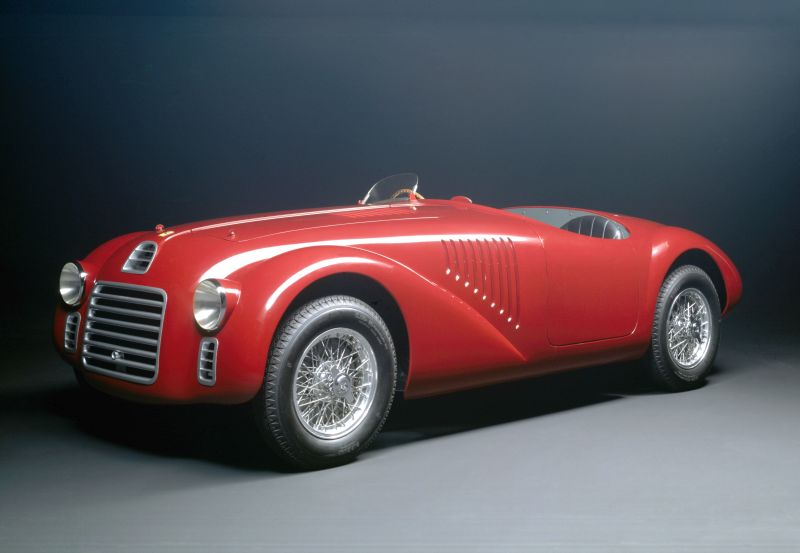

A Ferrari foi fundada por Enzo Ferrari em 1939, na cidade de Maranello, Itália. Inicialmente uma divisão da Alfa Romeo, a Ferrari se tornou independente e se tornou sinônimo de luxo, desempenho e inovação no mundo dos carros esportivos.
A Ferrari é conhecida por incorporar inovações tecnológicas, tanto em suas pistas de corrida quanto em seus modelos de rua. Desde motores híbridos até sistemas de aerodinâmica avançados, a Ferrari mantém sua posição como líder no design de carros de alta performance.

Se você tiver alguma dúvida ou quiser saber mais sobre a Ferrari, entre em contato conosco!
Email: contato@ferrari.com